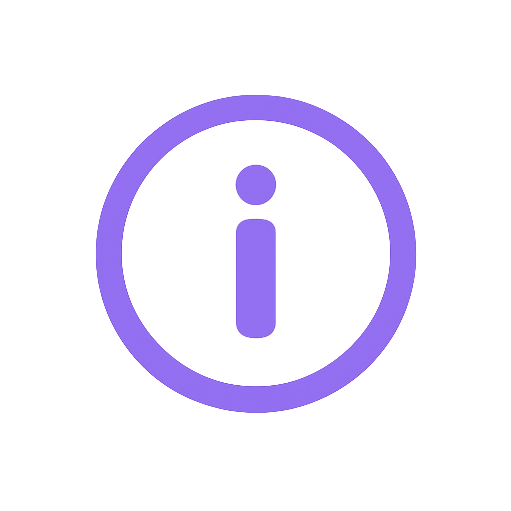
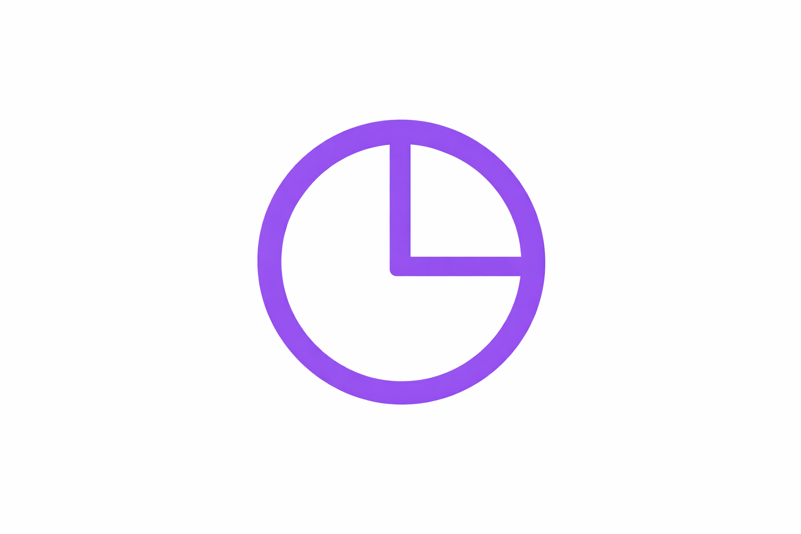

<!DOCTYPE html>

<title>MyRevo</title>
<meta name="viewport" content="width=device-width, initial-scale=1.0">
<link rel="icon" href="../images/icon.png">
<link rel="stylesheet" title="Default" href="../css/default.css">

<style>

    .circle {
        cursor: pointer;
        transition: 0.2s ease;
        width: 34rem;
    }

    .circle:hover {
        background: #6b3dcc;
    }

    .rubber {
        position: absolute;
        bottom: -0.2rem;
        cursor: pointer;
        height: 4.5rem;
        width: 12.5rem;
        transition: 0.2s ease;
    }

    .rubber:hover {
        background: #e2e2e2;
    }
    
    .next-icon {
        width: 3rem;
        height: 3rem;
    }

    .back-icon {
        width: 4rem;
        height: 5rem;
    }

    #position1 {
        position: absolute;
        top: 2.5rem;
        left: 20rem;
        font-size: 2rem;
    }

    #position2 {
        position: absolute;
        top: 11rem;
        left: 18rem;
        font-size: 1.5rem;
        font-weight: 700;
    }

    #position3 {
        position: absolute;
        top: -0.5rem;
        left: 3rem;
        font-size: 1.2rem;
        color: #8a64e2;
    }

    #position4 {
        position: absolute;
        top: 1rem;
        left: 3.1rem;
        font-size: 1.2rem;
    }

    #position5 {
        position: absolute;
        top: 2.5rem;
        left: 6rem;
        font-size: 1.2rem;
    }

    #position6 {
        font-size: 1.2rem;
        position: absolute;
        top: 27.4rem;
        left: 18.3rem;
        color: #8a64e2;
    }

    #position7 {
        font-size: 1.2rem;
        position: absolute;
        top: 28.8rem;
        left: 18.3rem;
    }

    #position8 {
        font-size: 1.2rem;
        position: absolute;
        top: 30.1rem;
        left: 21rem;
    }

    .clock-icon {
        position: absolute;
        top: 11.3rem;
        left: 13.8rem;
        width: 5rem;
        height: 3.5rem;
    }

    .dropdown-wrapper {
        position: absolute;
        top: 15rem;
        left: 15.5rem;
    }

    .dropdown {
        width: 36rem;
        padding: 0.6rem;
        border: 0.3rem solid #8a64e2;
        border-radius: 1rem;
        font-size: 1.3rem;
        cursor: pointer;
    }

    .info {
        position: absolute;
        left: 15.8rem;
        top: 26.8rem;
        width: 34.9rem;
        height: 5rem;
        border: 0.2rem solid #e2e2e2;
        border-radius: 1rem;
        background: #FFFFFF;
    }

    .info-icon {
        position: absolute;
        height: 2.4rem;
        top: 28rem;
        left: 16rem;
    }

    .generate-icon-white {
        width: 4rem;
        height: 2.5rem;
    }

    .error-msg {
        display: none;
        padding: 1rem;
        bottom: -0.8rem;
        width: 12rem;
        left: 38.1em;
        color: #FF0000;
        background: #FFFFFF;
        font-size: 1.4rem;
        border: 0.3rem solid #FF0000;
        border-radius: 1rem;
        margin-top: 12.7rem;
        margin-left: 53.3rem;
    }

    .dropdown:focus {
        outline: none;
        border-color: #8a64e2;
        box-shadow: 0 0 0 0.2rem #8a64e266; 
    }

</style>


<main class="whiteboard-frame1 animating2">

    

    <section class="whiteboard-frame2 animating2">
        <p class="stages"><strong><span style="color: #8a64e2;">Stage 4</span></strong>of 4</p>
            
        <section class="dots">
            <p class="stage-dot active"></p>
            <p class="stage-dot active"></p>
            <p class="stage-dot active"></p>
            <p class="stage-dot active"></p>
        </section>

        <p class="info"></p>
        
        <h3 class="font2" id="position6">A quick note</h3>
        <h3 class="font2" id="position7">While we'll do our best to build a timetable around your preference, it might</h3>
        <h3 class="font2" id="position8">not always be possible to generate exactly what you requested.</h3>

        <h1 class="font1" id="position1">When do you work best?</h1>
        <svg style="margin-left: 20.4rem" width="384" height="230" viewBox="0 0 160 10" xmlns="http://www.w3.org/2000/svg">
            <path d="M0,5 Q29,0 40,5 Q60,10 80,5 Q100,0 120,5 Q140,10 160,5" 
                fill="none" stroke="#8a64e2" stroke-width="4"/>
        </svg>

        
        <h2 class="font2" id="position2">What time of day do you work best?</h2>
        <section class="dropdown-wrapper">
            <select class="dropdown font2">
                <option value="" disabled selected>Select the time of day</option>
                <option>Early morning (6am - 9am)</option>
                <option>Morning (9am - 12pm)</option>
                <option>Afternoon (12pm - 5pm)</option>
                <option>Evening (5pm - 8pm)</option>
                <option>Night (8pm - 12pm)</option>
                <option>It varies</option>
            </select>
        </section>

        <button type="button" class="rubber" onclick="previousPage()">Back</button>

        <h3 class="error-msg font2"></h3>
            
    </section>

    <p class="whiteboard-top"></p>
    <p class="line animating2"></p>
    <button type="button" class="circle animating2" onclick="nextPage()">Generate my timetable</button>

</main>

<script src="../javascripts/device-check.js"></script>

<script>
    
    window.onload = () => {
        const skipLoad = sessionStorage.getItem('skipLoad');

        if (skipLoad) {
            sessionStorage.removeItem('skipLoad');

            const board1 = document.querySelector('.whiteboard-frame1');
            const board2 = document.querySelector('.whiteboard-frame2');
            const line = document.querySelector('.line');
            const btn = document.querySelector('.circle');

            board1.classList.remove('animating2');
            board2.classList.remove('animating2');
            line.classList.remove('animating2');
            btn.classList.remove('animating2');

            board1.classList.add('no-animation');
            board2.classList.add('no-animation');
            line.classList.add('no-animation');
            btn.classList.add('no-animation');
        }
    };

    function previousPage() {
        sessionStorage.setItem('skipLoad', 'true');
        window.location.href = '/stage_3/'
    }

 
    function nextPage() {
        const errorMessage = document.querySelector('.error-msg');
        const timeOfDay = document.querySelector('.dropdown').value;

        if (timeOfDay == '') {
            errorMessage.style.display = 'block';
            errorMessage.textContent = 'Error: You cannot leave any blank.';
            return;
        }

        errorMessage.style.display = 'none';
        localStorage.setItem("timeOfDay", timeOfDay);

        animation();
    }

    function animation() {
        const board1 = document.querySelector('.whiteboard-frame1');
        const board2 = document.querySelector('.whiteboard-frame2');
        const line = document.querySelector('.line');
        const btn = document.querySelector('.circle');
        
        board1.classList.remove('animating2');
        board2.classList.remove('animating2');
        line.classList.remove('animating2');
        btn.classList.remove('animating2');
        board1.classList.remove('no-animation');
        board2.classList.remove('no-animation');
        line.classList.remove('no-animation');
        btn.classList.remove('no-animation');

        btn.classList.add('animating1');

        setTimeout(() => {
            line.classList.add('animating1');
            board1.classList.add('animating1');
            board2.classList.add('animating1');
        }, 120);
 
        setTimeout(() => {
            window.location.href = '/stage_5/';
        }, 700);
    }

</script>